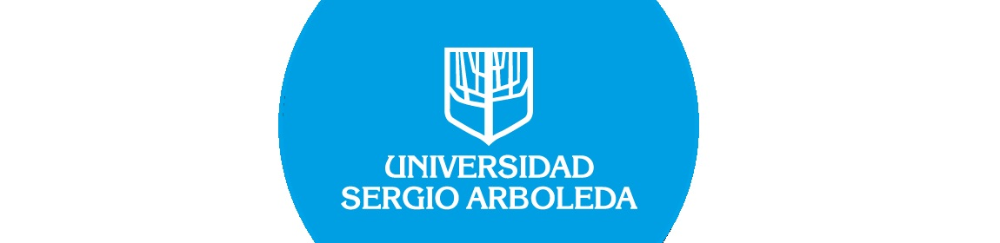

Sustentacion Redes Neuronales
Las redes neuronales son un sistema de procesamiento el cual “Consiste en un conjunto de elementos simples de procesamiento llamados nodos o neuronas conectadas entre sí por conexiones que tienen un valor numérico modificable llamado peso.” que a partir del Machine Learning tenemos la posibilidad de implementar a un algoritmo con la capacidad de aprendizaje, cuyos resultados del proceso permiten realizar tareas que comúnmente requieren de un sentido de interpretación reconocimiento de patrones. Por lo tanto, este algoritmo simula el comportamiento de un “Cerebro” artificial. Esta está inspirada en los sistemas biológicos la cual nos puede ayudar a resolver varios problemas como lo pueden ser, el reconocimiento de objetos, imágenes, reconocimiento de sonidos o voces y la toma de decisiones. Gracias a esta inteligencia se puede solucionar dichos problemas de una manera vigorosa y sencilla de implementar en el ámbito real. Debido a ello hoy las redes neuronales se pueden denominar con un tema que tiene mucha tendencia en este momento ya que es algo nuevo nunca antes visto con la capacidad de desarrollar muchas cosas y además de eso solucionar con su estupenda aplicación práctica. El sistema de interconexiones es esencial para el funcionamiento de la red neuronal puesto que al identificar los patrones el sistema de procesamiento pasa por diferentes capas que evalúan el reconocimiento del objeto y a su vez proporcionan un resultado en particular.
Por ende, esta conjetura es el camino al que el creador de esta inteligencia artificial llamaría como proceso de aprendizaje. Las redes neuronales claramente tienen muchos modelos(imágenes, sonidos, movimientos, poses, etc.) los cuales pueden ser muy útiles para la vida diaria y otros para la vida futura. Por esta razón daremos unas especificaciones y explicaciones de las redes que utilizamos en nuestro proyecto final, lo hacemos con la finalidad de poder dar a conocer la capacidad que dichas inteligencias tienen. os.MODELO DE RECONOCIMIENTO DE POSES O MOVIMIENTOS:
En este modelo y los demás utilizamos la herramienta llamada “TEACHABLE MACHINE” la cual nos brindó el amplio conocimiento sobre cómo puede y funciona una red neuronal, la capacida que tiene para cumplis las tareas que le asignan a cada campo, por lo tanto en este modelo para empezar tuvimos muchas ideas para desarrollarlo pero la que más nos resalto y nos causó alca curiosidad fue poder diferenciar distintos ámbitos de muchos de nosotros con estudiantes como lo pueden ser participar en clase, mantenernos alerta o de lo contrario distraernos hasta podernos dormir y por ultimo esta activos de pie prestando atención a cualquier cosa. ASIGNACIÓN DE TAREAS: comenzamos por asignar tareas las cuales fueron un total de cuatro. dormido, despierto, participando y de pie.TOMA DE MUESTRAS:
por cada tarea pudimos tomar a rederos de mas de 500 muestras ya que lo requería porque al ser poses y movimientos del cuerpo es muy necesario a la hora de reconocer la acción ya que si no se tomas esta o mas cantidad de muestras puede que la red no pueda asimilar muy bien lo que se esta haciendo en ese momento.
DEL PROGRAMA:
Después de haber completado la toma de muestras prosigue el paso de extracción del programa o código que nos brinda “TEACHABLE MACHINE”. para poder hacerlo es necesario que las muestras pasen por un proceso llamado training o train model es cual su función es entrenar el modelo para que de esta manera reconozca todas las poses sin equivocarse con ninguna.PREVIEW:
Este paso lo que cumple es podernos dar una previa vista de como quedo funcionando nuestro programas para que de esta manera podamos hacer arreglos o seguir con el proceso.IMPLEMENTACIÓN DEL PROGRAMA BRINDADO:
Después de extraer el código brindado por la herramienta “TEACHABLE MACHINE” con lenguaje “JAVA SCRIPT (JS)” . Se le hicieron algunas modificaciones para que al momento de convertir el un modelo “HTML” quedará con un “CLS” algo formal lo cual hace que una página llame la atención, por lo tanto con esto finalizamos este modelo pudiendo mostrar una página la cual tiene IA en su gran composición. Este mismo proceso lo seguimos con los demás modelos ya que “TEACHABLE MACHINE” nos brinda esa comodidad. los otros modelos fueron: reconocimiento de voces e imágenes. La gran diferencia en estos tres modelos claramente es que cada uno tiene su función procinal y la toma de muestras no es la misma porque al momento de recoger sonidos necesitábamos un espacio son ruidos bruscos para poder que no tuviera ningún error. por el otro lado en la toma de muestras de las imágenes podríamos estar en un lugar con ruido pero tenía su fondo que ser muy limpio para que no hubiera error al reconocer objetos.Este mismo proceso lo seguimos con los demás modelos ya que “TEACHABLE MACHINE” nos brinda esa comodidad. los otros modelos fueron: reconocimiento de voces e imágenes. La gran diferencia en estos tres modelos claramente es que cada uno tiene su función procinal y la toma de muestras no es la misma porque al momento de recoger sonidos necesitábamos un espacio son ruidos bruscos para poder que no tuviera ningún error. por el otro lado en la toma de muestras de las imágenes podríamos estar en un lugar con ruido pero tenía su fondo que ser muy limpio para que no hubiera error al reconocer objetos. En definitiva una red neuronal tiene muchas ramas y utilidades las cuales si se usan de una manera limpia e inteligente pueden ayudarnos mucho no sólo en el vivir diario sino en el futuro que se acerca muy pronto y no está lejos.
Integrantes
Alan Osorio . Oscar Peñuela . David Mujica